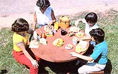

This school year, try some of these ideas on how to ...
Though lots of parents take great pains to provide their children with nourishing meals at home, such folk don't always give as much thought to what the youngsters eat when they're out of the house. And unfortunately, the menus that are dished up in public school cafeterias are quite often full of those very "demons"such as white flour, sugar, and other highly processed foods-that you're probably trying to eliminate from the family's diet (furthermore, current federal budget trimming could soon force cutbacks in school lunch programs).
Therefore, the only way to know that your small student is getting a nutritious noontime meal every day is to send the food with him or her. By preparing it yourself, you can be sure the little one has a satisfying, well-balanced lunch ... andsince it's likely that nobody knows the idiosyncrasies of your youngster's palate better than you do-you can match the contents of the "dinner bucket" to the child's particular likes and dislikes.
Here, then, are recipes for some nutritious carry-along edibles that were developed by MOTHER's favorite health food chef, Deborah Dunn (who also whipped up the spread for "A Summer Fishbake" in MOTHER NO. 70, page 89). The meals are all easy and fun to put together ...which means that youngsters may even enjoy helping with the preparations!
SANDWICH IDEAS
Probably the single most popular item of lunch-box fare is the sandwich ...and this simple noonday treat can be more appetizing-and nutritious-than the old white-bread-and-bologna standard. To prepare a slightly sweet and energyboosting sandwich, spread peanut (or any nut) butter on whole wheat bread, and top it with banana slices, sunflower seeds, and raisins. Or, as a variation, cover the proteinpacked filling with grated carrot (or cucumber slices) and alfalfa sprouts.
Sprouts can also make a delicious and crunchy addition to cheese sandwiches: Just spread the bread with mayonnaise .. add thinly sliced cheddar, Swiss, or Monterey Jack ... then pile on a thick layer of tender alfalfa sprouts.
Cheese sandwiches can benefit from the addition of raw vegetables, too. Butter your slices of bread (or use mayonnaise), and add the cheese, either sliced or grated, plus any one-or all-of the following vegetables: sliced cucumbers, avocado, tomato, grated carrot, and diced onion.
You can also create many scrumptious lunches by whipping up special fillings during the evening, and then making the sandwiches the next morning (and, again, slip in fresh sprouts to provide a nutritional bonus). A blend of 112 cup of cottage cheese, 114 cup of chopped broccoli, 2 tablespoons of primary yeast flakes, and a dash of sea salt tastes great on rye or cracked wheat bread. And any time you have oatmeal loaves on hand, try putting two pieces together with a tomato slice and a spread made of 4 ounces (half a large package) of cream cheese, 1/4 cup of chopped walnuts, and a chopped halfstalk of celery. The sweet taste of tahini spread will please any child when it's smoothed on dark bread: Just mix together 1 cup of tahini with 2 tablespoons of sesame seeds, 1/4 teaspoon of honey, 1/4 teaspoon of salt, and 1/2 teaspoon of cinnamon.
OTHER OPTIONS
Of course, sandwiches-as nutritious and filling as they are-don't have to be the only main courses your children ever carry to school, because many leftover dinner dishes can be recycled for the next day's lunch. A piece of cold quiche travels well, as do macaroni-and-cheese wedges. You might also like to cut a slice or two of the previous evening's lentil nut or millet loaf (or even a few spoonfuls of rice salad) to be served alone or stuffed into pita bread pockets. Or simply prepare a bag of finger food (such as cauliflower and broccoli florets, whole mushrooms, carrot sticks, asparagus spears, cherry tomatoes, cucumber strips, celery stalks, and green pepper rings) along with a yogurt or sour cream dip.
When packing snacks, don't succumb to the "easy out" of grabbing individual bags of potato chips or cookies. Instead, throw in a small container of homemade popcorn to satisfy the munchies. Fresh fruit makes a delicious dessert, too ... and it just may be sweet enough to help your child avoid the urge to visit the candy machine! Toss together whole strawberries, blueberries, banana sections, melon cubes, and pineapple chunks ...then turn that fresh fruit salad into a special treat by adding a cream cheese or carob-honey sauce. Whole wheat or bran muffins -with nuggets of dried fruit inside-are also great school lunch desserts ...and, of course, they're a lot more wholesome than are cake squares or candy bars!
DRINK UP!
While you're concocting imaginative dishes for your child's noontime meals, remember that take-along lunches don't have to be accompanied by plain milk, sugary fruit punch, or (worse) soda pop. You can, instead, fill your child's thermos with a hot, hearty soup ...or-while the weather's still warm-try one of the following cooling drinks that Deborah has devised. (You can easily mix a large batch of any one of these in the blender ...and make a healthful breakfast for yourself while providing your youngster with a nutritious lunchtime treat!)
To whip up a carob-banana shake, blend together 1-1/2 cups of milk, 1 teaspoon each of honey and carob, 1/2 teaspoon of cinnamon, and half a banana. Or, if you think that your child would prefer a creamy drink, combine 1 cup of plain yogurt, 2 teaspoons of honey, and 1 cup of any juicy fresh fruit (such as peaches, strawberries, or oranges). A honeydew delight-which can provide a pleasant change from milkbased drinks-requires 1/2 cup each of chopped melon and orange juice, plus 1 teaspoon of lemon juice.
A thick and tasty peanut butter shake will provide enough protein to keep your youngster going all day! To make one, blend 1/2 cup each of milk and plain yogurt with 1 tablespoon of peanut butter and 1 teaspoon of honey. You might also want to try a tomato supreme ...which is made by mixing together 1 cup of diced ripe tomatoes, 112 stalk of chopped celery, 1 teaspoon of lemon juice, and a dash of salt. Finally, you can include a nice surprise in your child's lunch box by making spiced apple juice. Simply soak a cinnamon stick in one cup of apple juice overnight, then remove it before pouring the beverage into the thermos.
As you can see from the recipes provided here, box lunches don't have to be either dreary and unappetizing or low in nutritional value. If you want to be certain your children are eating as well at school as they are at home, send the young scholars off each day with a lunch box full of homemade foods that you know you can trust. Sure, it may take you a few minutes longer to prepare such meals in the morning, but you can likely get the youngsters themselves actively involved in the task ... which would not only ease your workload, but would help them become aware of sound eating habits, too!
|
 |
|
|